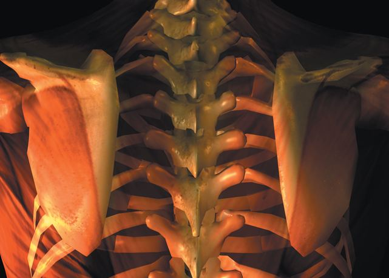

Matter Over Mind
A physiological basis for the pacebo effect
Ryan Chao
Spring 2006

A placebo – Latin for “I shall please” – is by definition medicinally
inert. Nonetheless, anecdotal evidence has long suggested that placebos
possess a strange healing effect, the mechanism of which has long baffled
scientists. Until recently, no one has ever been able to explain how a
chemically inert pill or a sham surgery could produce beneficial
results. Moreover, to this day, some still question whether the placebo
effect even exists. Researchers, however, have recently discovered
evidence that suggests a physiological basis for the placebo effect.
Past case studies describing the existence of the
placebo effect have almost entirely been small-scale studies.
Regardless, the limited support they provide has been important in
demonstrating the healing effects of placebos. Perhaps the best example
of such a study was reported by J. Bruce Moseley, MD, at the Houston
Veteran Affairs Medical Center in the July 2002 issue of the New England
Journal of Medicine. Between 1995 and 1998, Moseley and his colleagues
recruited a total of 180 patients under the age of 75 who had
clinically-validated osteoarthritis of the knee joint. The patients
were randomly assigned to undergo arthroscopic debridement,
arthroscopic lavage, or a placebo sham surgery. After multiple
inquiries over a 24-month period about knee function and the intensity
of post-operative pain, the researchers determined that patients who
received invasive surgical procedure fared no better than those who
received a sham surgery by either measure.
Though most placebos involve sham surgery, sugar
pills, or inert chemical treatments, doctors who are empathetic and
provide emotional support for their patients can themselves be
considered walking placebos. In 1987, the British doctor K.B. Thomas
conducted an experiment on 200 patients suffering from the symptoms of a
mild cold. He gave a definitive diagnosis and words of encouragement to
half of these patients, while giving the other half an unsure
diagnosis. After two weeks, 64 percent of the patients who received
encouragement felt relieved of their symptoms compared to 39 percent of
the patients in the other group.
While these studies all documented the placebo
effect, they did not account for it mechanistically. In fact, for years
the placebo effect was written off as a psychological phenomenon because
in all of the relevant case studies, the patients believed that they
were receiving actual treatments. This is not surprising since it has
long been known that expectation of pain can ready the body, so that
less pain is felt. To that end, Howard Spiro, MD, professor of medicine
at the Yale University School of Medicine often prescribes vitamin B-12
injections to his patients as a form of a placebo treatment producing a
positive effect that has yet to be formally characterized. “Expectation
is probably the major mechanism by which placebos work,” says Spiro.
“There is always a placebo effect in giving active medicines if they
have a recognizable physiological effect, which makes the patient
realize that he or she is getting something powerful.” This contention
is supported by the work of Irving Kirsch, PhD, a psychologist at the
University of Connecticut who has extensively studied expectation
psychology. In 1998, Kirsch and his colleagues published the results of
a meta-analysis, which demonstrated that up to 75 percent of the
effectiveness of 19 different antidepressant drugs stemmed from the
expectation of treatment alone. Indeed, when it comes to the placebo
effect, the long-standing adage remains: “it’s all in your head.”
But new evidence indicates that this sentiment may
be misplaced. In the August 2005 issue of the Journal of Neuroscience,
Jon-Kar Zubieta, PhD, a neuroscientist at the University of Michigan,
and his colleagues published the results of a study that seem to have
unearthed a portion of the placebo effect’s physiological correlate.
Zubieta’s study investigated the mechanism by which placebo
administration alleviated pain induced in 14 males between 20 and 30
years old. First, the researchers induced pain via the injection of
saline into the subjects’ masseter muscles, the muscles used to clench
the jaw and grind the teeth. Then, in 15-second intervals, the subjects
recorded the intensity and unpleasantness of the pain on a scale from 0
to 100, with 100 being the highest pain intensity. Simultaneously,
positron emission tomography (PET) and functional magnetic resonance
imaging (fMRI) scans were conducted. Four minutes after the initial
injection of the pain-inducing saline, half of the volunteers received
a different saline injection, which they were told was an analgesic that
may or may not reduce the pain. This experimental group would
demonstrate the efficacy of the placebo.
The results showed that placebo administration was
associated with significant pain reduction. Those who did not receive
the placebo reported an average pain intensity score of 37.5, while
those who did reported a score of 27.4. For the non-placebo group, the
average pain unpleasantness score was 40.4, compared to only 32.9 for
the placebo group. Clearly, subject expectation of treatment lowered
pain intensity and unpleasantness. But was there a physiological
correlate?
Zubieta and colleagues first looked for an increase
in endorphin neurotransmission. Involved in both the modulation of pain
perception and the promotion of immunologic competence, endorphins are
considered to be the body’s natural analgesics. Typically, endorphins
exert their effect by interacting with mu-opioid receptors. True to
form, the PET and fMRI scans showed a placebo- dependent increase in
endorphin release and increased µ-opioid receptor-mediated
neurotransmission in the anterior cingulate cortex, the dorsolateral
prefrontal cortex, the insular cortex, and the nucleus accumbens – all
areas of the brain involved with pain sensation, reward anticipation,
and pleasure.
In light of this study, it appears that placebos
have physiological effects that can enhance immune function and modulate
pain perception. But does this mean that placebo-induced expectation of
treatment itself can be substituted for traditional pain killers?
Zubieta’s study should not be considered the end of the road but rather
the creation of a new path: now that we are beginning to understand the
biochemical mechanism underlying placebo pain modulation, we can
inquire further and evaluate its full potential as a sovereign
analgesic. For now, though, there is a brighter future for placebos in
clinical medicine.